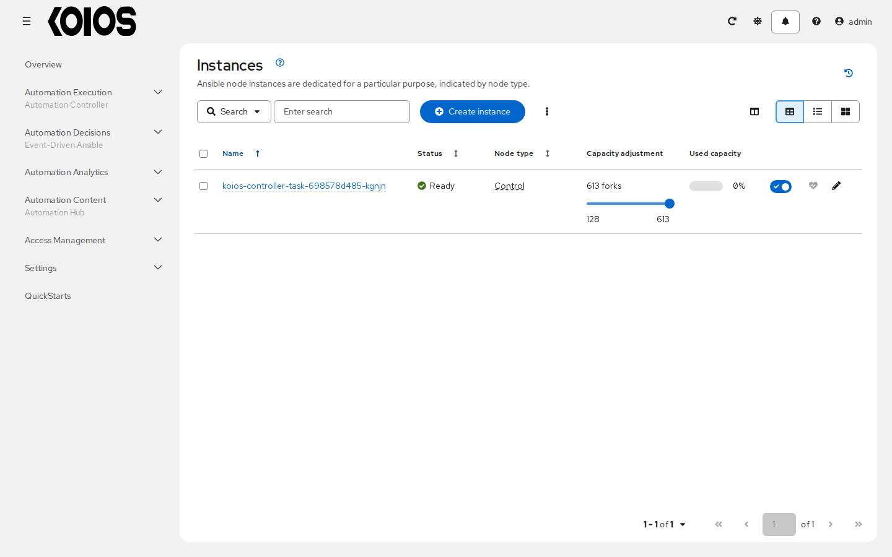

7. Clustering
In Koios Automation Platform, automation controller runs as two Kubernetes deployments that the Koios operator manages:
web pods serve the controller API behind the platform gateway;
task pods run the dispatcher, the callback receiver and the other background services. Each task pod is a control instance of the controller cluster: it registers itself when it starts.
Playbook jobs run separately from the controller services. By default they run as pods of their own, in the namespace of the
platform, through the default container group (see Instance Groups). The controlplane
instance group holds the control instances, which run project updates and other internal work. A new
platform has one control instance, and the cluster grows by adding task pods.
Controller web and task pods share the controller’s PostgreSQL database. The operator can deploy the database or connect the controller to an external database (see KoiosPlatform). Other platform services use their own databases, even when the platform-managed PostgreSQL server hosts them together.
The deployment relationships are:
Component |
Responsibility |
Deployment relationship |
|---|---|---|
Platform gateway |
Jewel handles platform identity and access; Envoy routes public API requests to the appropriate service. |
Separate from controller web and task Deployments; it is the public entry point. |
Controller web pods |
Serve the controller API behind the gateway. |
Replicas of the controller web Deployment. |
Controller task pods |
Run scheduling, dispatch, callback processing and control-plane Receptor services. Internal work such as project updates can run in their control-plane execution environment container. |
Replicas of the controller task Deployment; each registers a control instance. |
Controller local Redis/Valkey |
Provides local controller queueing and communication within each web or task pod. |
A sidecar in each controller pod, not a Redis process installed on each Kubernetes host. |
Platform shared Redis/Valkey |
Supplies the Redis-compatible service used by gateway and other configured platform components. |
Separate from the controller’s local sidecars; managed or externally supplied according to the platform configuration. |
PostgreSQL |
Persists service data, including controller job and event records. |
Platform-managed database server or external database configuration. |
Job execution |
Runs the selected playbook in its execution environment. |
Container group job pods by default; external execution nodes are also supported through Receptor. |
Increasing controller replicas does not duplicate a complete platform stack on each Kubernetes node. Pod placement, execution capacity and availability of the database, Redis-compatible services and gateway must be considered separately.
7.1. Scaling the web and task pods
Set the replicas of the controller under spec.controller of the KoiosPlatform; the operator
passes these fields to the controller deployments:
replicasscales both the web and the task pods to the same number;web_replicasandtask_replicasset each deployment on its own, and take precedence overreplicas.
The operator manages the replicas while web_manage_replicas and task_manage_replicas are
true, the default; set them to false to scale the deployments yourself, for example with a
HorizontalPodAutoscaler.
For example, two web pods and three task pods (three control instances):
kubectl patch koiosplatform koios -n koios --type merge \
-p '{"spec": {"controller": {"web_replicas": 2, "task_replicas": 3}}}'
New task pods register as control instances and join the controlplane group on their own.
7.2. Assigning automation controller pods to specific nodes
The same fields constrain where the controller pods run. Each one applies to both deployments, and
its web_ and task_ variants to one of them:
Field (under |
Applies to |
|---|---|
|
nodeSelector of the web and task pods |
|
nodeSelector of one deployment |
|
Tolerations of the web and task pods |
|
Tolerations of one deployment |
|
Affinity rules of the web and task pods |
|
Affinity rules of one deployment |
|
topologySpreadConstraints of the web and task pods |
|
topologySpreadConstraints of one deployment |
|
Annotations of the web and task pods |
node_selector, tolerations, topology_spread_constraints, annotations and their
variants take YAML as a string; affinity takes an object. A web_ or task_ variant replaces
the common value for its deployment; it is not merged with it. For example, task pods on dedicated nodes:
spec:
controller:
task_node_selector: |
node-role.example.com/automation: "true"
task_tolerations: |
- key: dedicated
operator: Equal
value: automation
effect: NoSchedule
The pods of jobs are placed by their container group: set a node selector or tolerations in its pod
specification (see Customize the pod spec). The gateway, Event-Driven Ansible, automation hub
and PostgreSQL have their own placement fields in the KoiosPlatform (see
KoiosPlatform).
7.3. Status and monitoring
The controller reports the state of its cluster at /api/controller/v2/ping/, without
authentication: the node that served the request, registered non-hop instances with their last heartbeat, and the
instance groups. More detail, such as running jobs and capacity, is at
/api/controller/v2/instances/ and /api/controller/v2/instance_groups/, and in the user
interface under Automation Execution > Infrastructure, in Instances and Instance Groups.

For the state of the deployment itself, look at the KoiosPlatform: its conditions say whether its
last reconciliation succeeded and, if not, why (see Operate).
7.4. Failure behavior
Each task pod runs several services: the dispatcher, which runs the work; the callback receiver, which stores the events of running jobs; and the services that keep the instance registered. If they keep failing, the health checks of the task container fail and Kubernetes restarts it.
When a control instance stops sending heartbeats for long enough that another instance declares it lost, the other instances take over:
the jobs it was running are marked as failed, with the explanation Job reaped due to instance shutdown;
the jobs it had not started yet go back to the queue, for another instance;
the instance is removed from the cluster, and the restarted pod registers again.
An instance that restarts before it is declared lost keeps its identity and picks up its own work.
Run at least two task pods so that losing one does not stop new work.
7.5. Job runtime behavior
When a job is launched, it is queued, and a control instance with capacity picks it up and starts it
in the instance group the job runs in (by default, the default container group). The job’s pod runs
the playbook in its execution environment and streams its events back.
Projects are synchronized before they are used: if the revision a job needs is not there yet, it is
fetched first, and the sync is recorded as a project update with launch_type = sync. Collections
and roles from Galaxy or automation hub are downloaded in that update, which takes space in temporary
storage; for large projects, allow for it in the resources of the task pods.
The request and result paths are separate:
A user or API client reaches the platform gateway, which routes controller requests under
/api/controller/to the controller web service.The controller schedules the job and a task pod dispatches it through Receptor to the selected execution location.
The execution worker runs the playbook in its execution environment and returns job results to the controller.
Controller callback processing stores job events in PostgreSQL; users read status and output through the gateway and controller API.
/api/controller/v2/ping/ reports controller cluster information. It is an observation endpoint, not a load balancer distributing requests across complete HTTP/worker/Redis host stacks.
7.5.1. Job runs
By default, a job can be picked up by any control instance, and it runs in the instance group set on its job template, inventory or organization (see Control Where a Job Runs).
To take an instance out of rotation, disable it (enabled: false) in the API or the user interface.
No new jobs are assigned to it, and the jobs it is running finish normally.